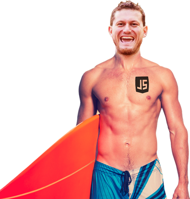
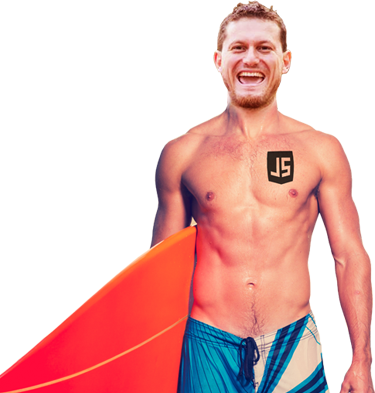

Какво е “Two limbs swimming system”? Както самото име подсказва – това е техника за плуване, развита с целта да се използват само два крайника на тялото. Но защо му е нужно на човек да се учи отново как се плува без да използва и четирите крайника? Каква толкова голяма полза може да има от разрушаването на навици, градени с месеци, години, десетилетия? Не ви ли се е искало да пиете бира докато участвате в някой ултра плувен маратон. Искали ли сте да правите „селфи“ докато печелите състезание? Никога ли не сте се замисляли как можете да движите два от вашите крайници в различна посока и все пак да потъвате… по бавно?
Разберете на безплатния семинар на тема “Two limbs swimming system. Is it worth it?” , воден от Team Mango … на 12 декември 2014 г.(петък) от 19:30 до 22:00 часа в открити води на Атлантика. Ако ви се струва, че е късно и студено, нашите асистентки … ще ви стоплят ...
В този кратък семинар ще наблегнем главно върху приложението и значението на тази техника. Ще хвърлим и поглед върху това, дали има реално значение как ще използваме два крайника за оптимално задържане на тялото на повърхността на водата и ще научим почти всичко, което има да се знае за техниката кучешко, жабешко и плуване в комбинация на горен и долен крайник.
Two limbs swimming system. Is it worth it?
Лектори: Анатоли Ангелов, Динко Тодоров, Янко Александров, Александър Иванов, Евгения Българанова, Венцислав Николов
Стартова дата:12 декември 2014 г. 19:30 часа
Крайна дата:12 декември 2014 г. 22:00 часа
Крайна дата на записване:12 декември 2014 г. 19:30 часа
Моля влезте в системата за да се запишете за курса